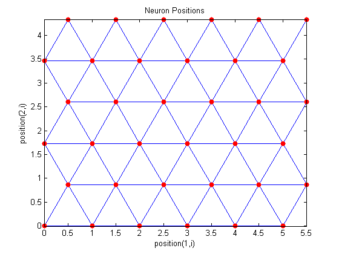
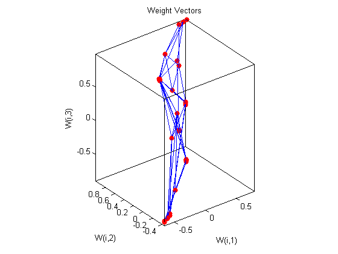
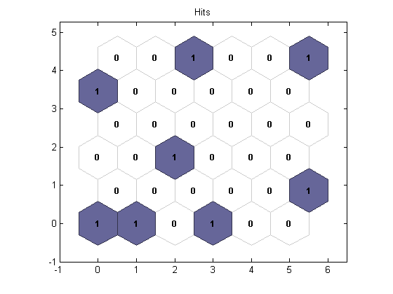

Contents
Matlab神经网络43个案例分析
% 单层竞争神经网络的数据分类—患者癌症发病预测 % by 王小川(@王小川_matlab) % http://www.matlabsky.com % Email:sina363@163.com % http://weibo.com/hgsz2003
清空环境变量
clc clear
录入输入数据
载入数据
load p; %转置后符合神经网络的输入格式 P=P';
网络建立和训练
newsom建立SOM网络。minmax（P）取输入的最大最小值。竞争层为6*6=36个神经元
net=newsom(minmax(P),[6 6]);
plotsom(net.layers{1}.positions)
% 5次训练的步数
a=[10 30 50 100 200 500 1000];
% 随机初始化一个1*10向量。
yc=rands(7,8);
 进行训练
训练次数为10次
net.trainparam.epochs=a(1); % 训练网络和查看分类 net=train(net,P); y=sim(net,P); yc(1,:)=vec2ind(y); plotsom(net.IW{1,1},net.layers{1}.distances) % 训练次数为30次 net.trainparam.epochs=a(2); % 训练网络和查看分类 net=train(net,P); y=sim(net,P); yc(2,:)=vec2ind(y); plotsom(net.IW{1,1},net.layers{1}.distances) % 训练次数为50次 net.trainparam.epochs=a(3); % 训练网络和查看分类 net=train(net,P); y=sim(net,P); yc(3,:)=vec2ind(y); plotsom(net.IW{1,1},net.layers{1}.distances) % 训练次数为100次 net.trainparam.epochs=a(4); % 训练网络和查看分类 net=train(net,P); y=sim(net,P); yc(4,:)=vec2ind(y); plotsom(net.IW{1,1},net.layers{1}.distances) % 训练次数为200次 net.trainparam.epochs=a(5); % 训练网络和查看分类 net=train(net,P); y=sim(net,P); yc(5,:)=vec2ind(y); plotsom(net.IW{1,1},net.layers{1}.distances) % 训练次数为500次 net.trainparam.epochs=a(6); % 训练网络和查看分类 net=train(net,P); y=sim(net,P); yc(6,:)=vec2ind(y); plotsom(net.IW{1,1},net.layers{1}.distances) % 训练次数为1000次 net.trainparam.epochs=a(7); % 训练网络和查看分类 net=train(net,P); y=sim(net,P); yc(7,:)=vec2ind(y); plotsom(net.IW{1,1},net.layers{1}.distances) yc
Warning - PLOTSOM only shows first three dimensions.
Warning - PLOTSOM only shows first three dimensions.
Warning - PLOTSOM only shows first three dimensions.
Warning - PLOTSOM only shows first three dimensions.
Warning - PLOTSOM only shows first three dimensions.
Warning - PLOTSOM only shows first three dimensions.
Warning - PLOTSOM only shows first three dimensions.
yc =
1 3 1 36 4 36 1 5
1 24 1 36 6 30 25 25
1 24 1 36 31 36 19 4
1 6 13 35 21 36 9 31
1 6 2 34 21 24 9 31
31 36 19 10 15 6 28 1
1 12 2 33 15 36 4 25
 网络作分类的预测
测试样本输入
t=[0.9512 1.0000 0.9458 -0.4215 0.4218 0.9511 0.9645 0.8941]'; % sim( )来做网络仿真 r=sim(net,t); % 变换函数 将单值向量转变成下标向量。 rr=vec2ind(r)
rr =
1
网络神经元分布情况
查看网络拓扑学结构
plotsomtop(net) % 查看临近神经元直接的距离情况 plotsomnd(net) % 查看每个神经元的分类情况 plotsomhits(net,P)